Comments: The box plot illustrates several outliers above the maximum and below the minumum. The mean and median values are almost equal indicating the possibility of normal distribution. The plot also illustrates that 50% of the cars have a 20-25 MPG range. Finally, the minimum value for MPG is ~14, and the maximum value is ~31.
(1b) Create box plots for MPG_Combo by Type.
boxplot(MPG_Combo~Type,data = cars,main="MPG_Combo by Type",xlab="Type",ylab="MPG_Combo",col="red",border="black")
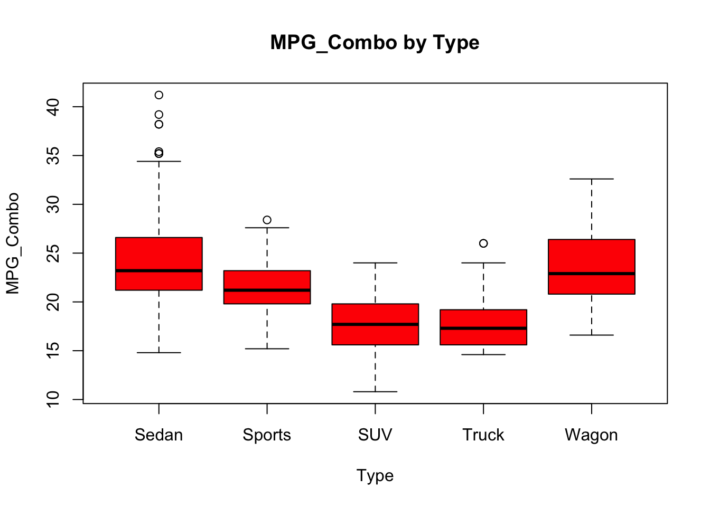
Comments: The box plot illustrates that Sedan has several outliers above the maximum value. Truck and SUV have the lowest fuel efficiencies, whereas Wagon and Sedan have the highest. Sports vehicles fall between Truck/SUV and Wagon/Sedan in terms of fuel efficiency.
(1c) Basic descriptive statistics for Horsepower for all vehicles.
summary(cars$Horsepower)
Min. 1st Qu. Median Mean 3rd Qu. Max.
100.0 165.0 210.0 216.8 255.0 500.0
mean(cars$Horsepower)
[1] 216.76
median(cars$Horsepower)
[1] 210
var(cars$Horsepower)
[1] 5085.952
range(cars$Horsepower)
[1] 100 500
skewness(cars$Horsepower)
[1] 0.9528091
attr(,"method")
[1] "moment"
Comments: The mean (216.8) is greater than the median (210) indicating that the data is skewed to the right. Our skewness assumption is confirmed since our calculated skewness (0.9528091) is greater than zero. The values range from 100 to 500.
Visual Methods for Normality Assumption
boxplot(cars$Horsepower, main ="Horsepower Box Plot - All Vehicles",xlab ="Horsepower",ylab ="Value",col ="red",border ="black"); points(mean(cars$Horsepower, na.rm =TRUE), col="blue")
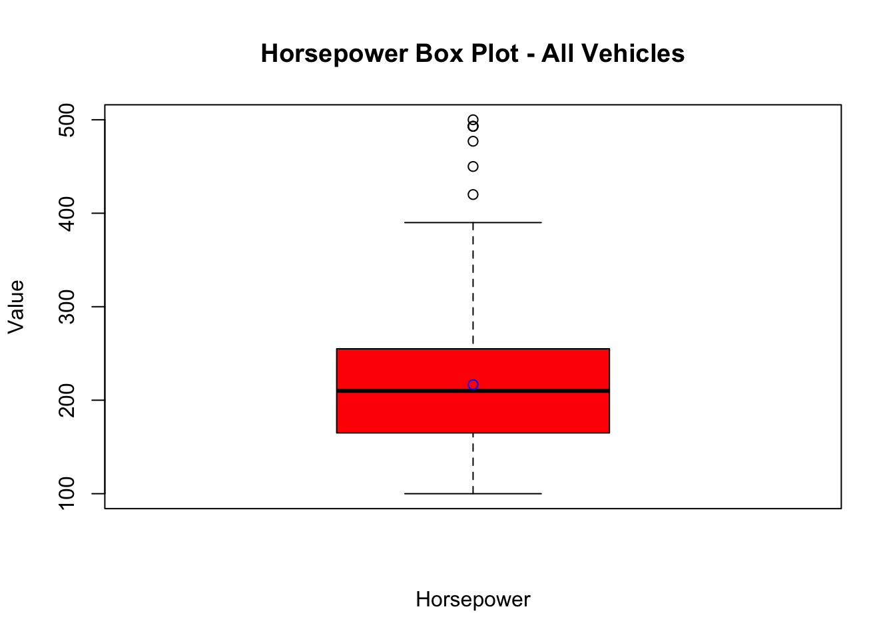
hist(cars$Horsepower, main ="Horsepower Histogram - All Vehicles",col ="red",border ="black")
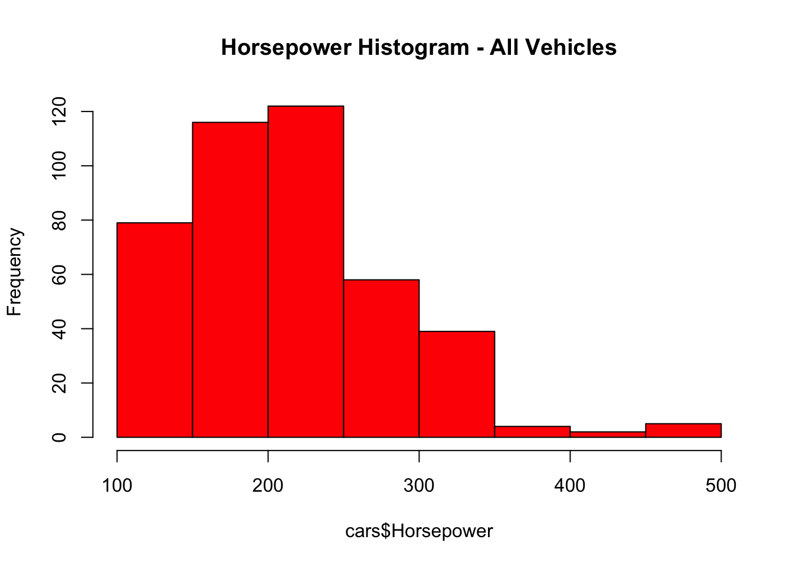
qqnorm(cars$Horsepower,main ="Horsepower QQ-Plot - All Vehicles");qqline(cars$Horsepower, col ="red")
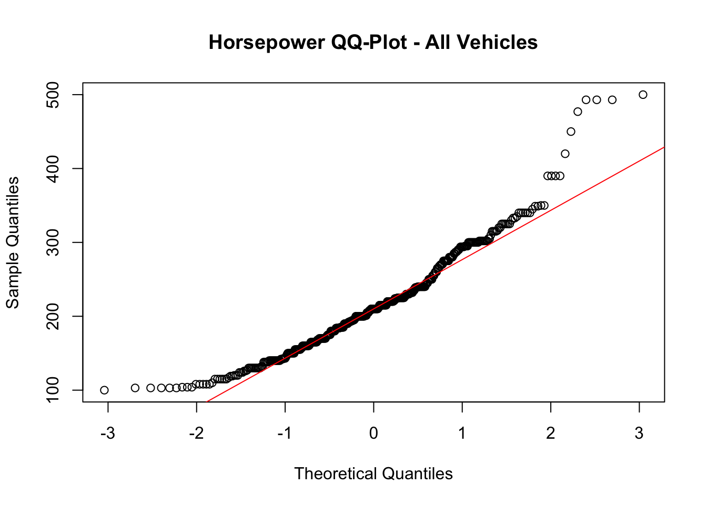
Comments: The histogram and box plot further illustrate the right skewness of the Horsepower data. The QQ-plot demonstrates a majority of the values near the red line, but there are various outliers.
Quantitative: Shapiro-Wilks Test is the quantitative method used to comment on the assumption of Normality for the Horsepower variable.
shapiro.test(cars$Horsepower)
Shapiro-Wilk normality test
data: cars$Horsepower
W = 0.94573, p-value = 2.32e-11
Conclusion: Since the p-value (2.32e-11) of is less than the significance value (α=0.05), Horsepower does not follow normal distribution.
(1d) Assumption of normality for Horsepower by Type - Sports, SUV, Truck only.
specified_types <-c("Sports", "SUV", "Truck")cars2 =filter(cars, Type %in% specified_types)boxplot(Horsepower ~ Type, data = cars2, main="Horsepower by Type",xlab="Type", ylab="Horsepower", col="red", border="black"); points(mean(cars$Horsepower), col="blue")
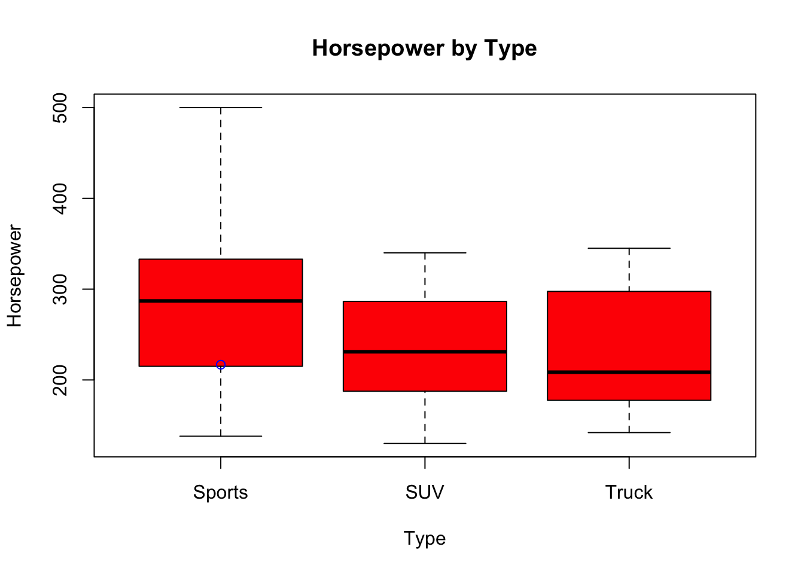
Sports - visual and quantitative methods for normality check.
qqnorm(cars2$Horsepower[cars2$Type=="Sports"]);qqline(cars2$Horsepower[cars2$Type=="Sports"], col ="red")
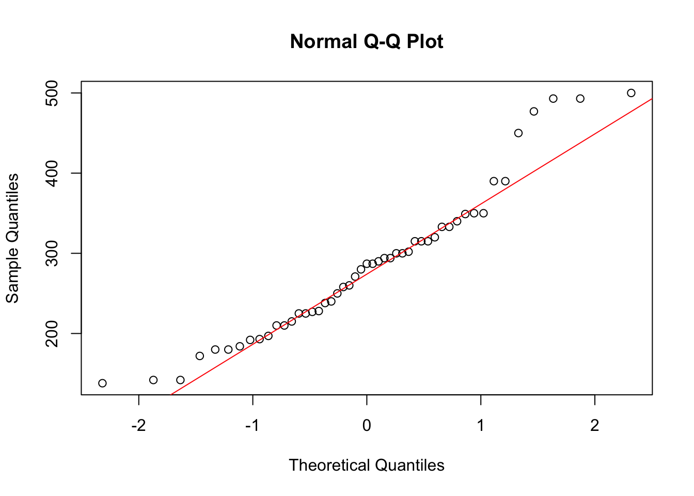
hist(cars2$Horsepower[cars2$Type=="Sports"], main ="Sports", xlab="Sports",col ="red",border ="black")
Shapiro-Wilk normality test
data: cars2$Horsepower[cars2$Type == "Sports"]
W = 0.94276, p-value = 0.01898
Comments: The histogram and box plots illustrate right skewness for Sports. The QQ-plot illustrates the majority of values close to the red line, but there are many outliers; therefore, the Shapiro-Wilk test was used to determine the normality of the data. Since the p-value (0.01898) is less than the significance level (α=0.05), we reject the null hypothesis. The data does not follow normal distribution.
SUV - visual and quantitative methods for normality check.
qqnorm(cars2$Horsepower[cars2$Type=="SUV"]);qqline(cars2$Horsepower[cars2$Type=="SUV"], col ="red")
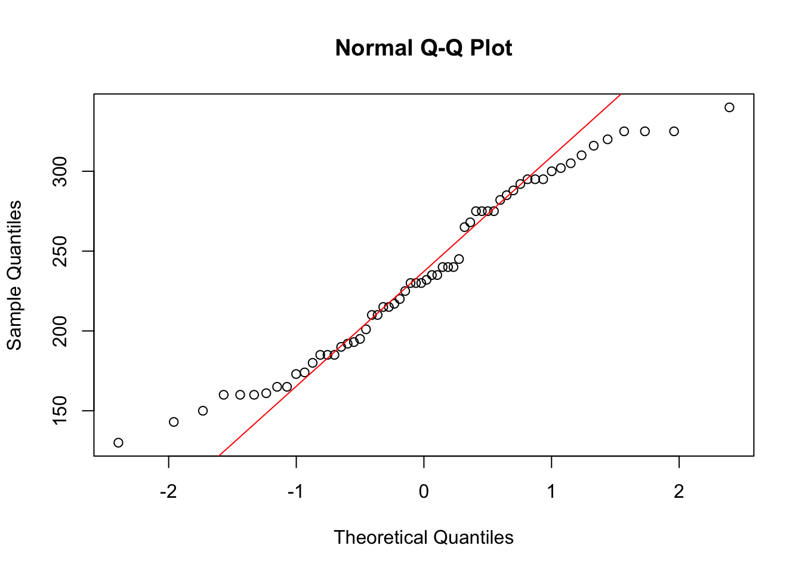
hist(cars2$Horsepower[cars2$Type=="SUV"], main ="SUV", xlab="SUV",col ="red",border ="black")
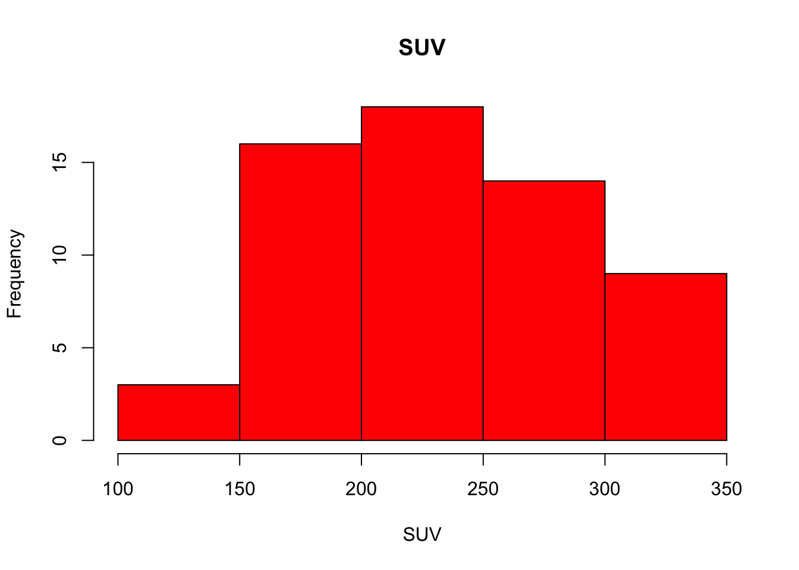
shapiro.test(cars2$Horsepower[cars2$Type=="SUV"])
Shapiro-Wilk normality test
data: cars2$Horsepower[cars2$Type == "SUV"]
W = 0.95945, p-value = 0.04423
Truck - visual and quantitative methods for normality check.
qqnorm(cars2$Horsepower[cars2$Type=="Truck"]);qqline(cars2$Horsepower[cars2$Type=="Truck"], col ="red")
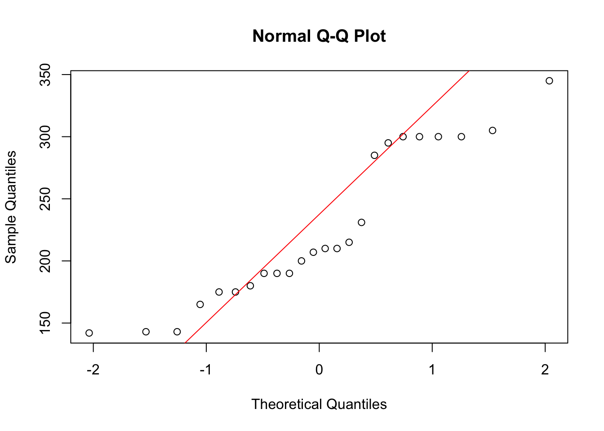
hist(cars2$Horsepower[cars2$Type=="Truck"], main ="Truck", xlab="Truck",col ="red",border ="black")
Shapiro-Wilk normality test
data: cars2$Horsepower[cars2$Type == "Truck"]
W = 0.8951, p-value = 0.01697
Exercise 2: Hypothesis Testing
(2a) The p-values of SUV (0.04423) and Truck (0.01697) are less than the significance level (α=0.05), so we reject the null hypothesis; therefore, we should perform the nonparametric Wilcoxon rank-sum test because SUV and Truck are not normally distributed.
(2b) H0: SUV and Truck have similar horsepower because the two groups are from the same distribution with equal median values.; H1: SUV and Truck have different horsepower because one of the groups has a larger median value.
(2c)
# Filter DataFrame to include only SUV & Truck suv_truck_types <-c("SUV", "Truck")cars3 =filter(cars2, Type %in% suv_truck_types)# Perform the Wilcoxon rank-sum testwilcox.test(Horsepower~Type, data = cars3, exact=FALSE)
Wilcoxon rank sum test with continuity correction
data: Horsepower by Type
W = 806.5, p-value = 0.3942
alternative hypothesis: true location shift is not equal to 0
Conclusion: Since p-value (0.3942) is larger than significance level (α=0.05), we do not have enough evidence to reject the null hypothesis (HO); therefore, SUV and Truck have similar horsepower because the two groups are from the same distribution with equal medians.
Exercise 3: Hypothesis Testing
(3a) Import dataset and filter DataFrame to include only July & August
# Import datasetdf = airquality# Filter DataFrame to include only July & August months <-c(7, 8)aug_july_df =filter(df, Month %in% months)
Create QQ-plots and perform the Shapiro-Wilk test for July and August normality check.
# Create QQ-plot for July normality check.qqnorm(aug_july_df$Wind[aug_july_df$Month==7]);qqline(aug_july_df$Wind[aug_july_df$Month==7], col =2)
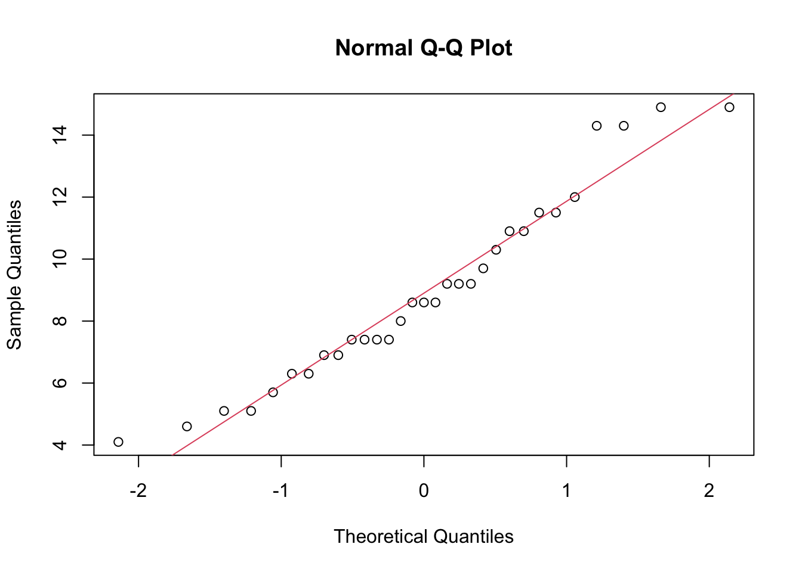
# Perform the Shapiro-Wilk test for July normality check.shapiro.test(aug_july_df$Wind[aug_july_df$Month==7])
Shapiro-Wilk normality test
data: aug_july_df$Wind[aug_july_df$Month == 7]
W = 0.95003, p-value = 0.1564
# Create QQ-plot for August normality check.qqnorm(aug_july_df$Wind[aug_july_df$Month==8]);qqline(aug_july_df$Wind[aug_july_df$Month==8], col =2)
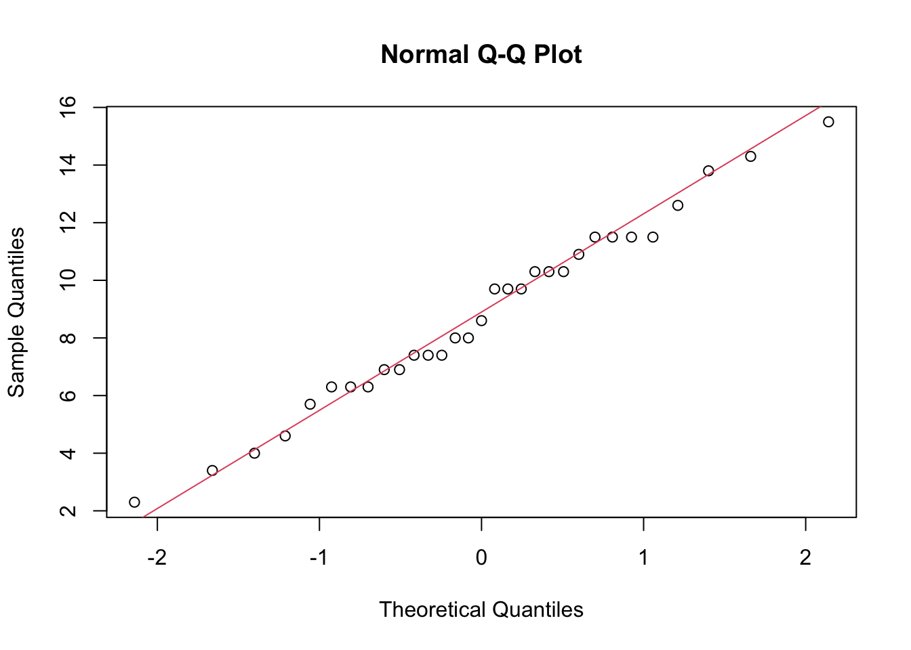
# Perform the Shapiro-Wilk test for August normality check.shapiro.test(aug_july_df$Wind[aug_july_df$Month==8])
Shapiro-Wilk normality test
data: aug_july_df$Wind[aug_july_df$Month == 8]
W = 0.98533, p-value = 0.937
Since both p-values for July (0.1564) and August (0.937) follow the normal distribution (p-values > significance level), we perform the equal variance test to choose between the pooled t-test (equal variance case) and Satterthwaite t-test (unequal variance case).
F test to compare two variances
data: Wind by Month
F = 0.8857, num df = 30, denom df = 30, p-value = 0.7418
alternative hypothesis: true ratio of variances is not equal to 1
95 percent confidence interval:
0.4270624 1.8368992
sample estimates:
ratio of variances
0.8857035
Since the p-value (0.7418) of the equal variance test is greater than the significance level (α=0.05), we do not have enough evidence to reject the null hypothesis; therefore, we will perform the pooled t-test because July and August have the same variance.
(3b) H0: mean of July = mean of August; H1: mean of July != mean of August
(3c)
t.test(Wind ~ Month, data = aug_july_df, alternative ="two.sided", var.equal=TRUE)
Two Sample t-test
data: Wind by Month
t = 0.1865, df = 60, p-value = 0.8527
alternative hypothesis: true difference in means between group 7 and group 8 is not equal to 0
95 percent confidence interval:
-1.443108 1.739883
sample estimates:
mean in group 7 mean in group 8
8.941935 8.793548
Conclusion: Since the p-value (0.8527) of the pooled t-test is greater than the significance level (α=0.05), we do not have enough evidence to reject the null hypothesis; therefore, the data is normally distributed and the two groups have equal means.